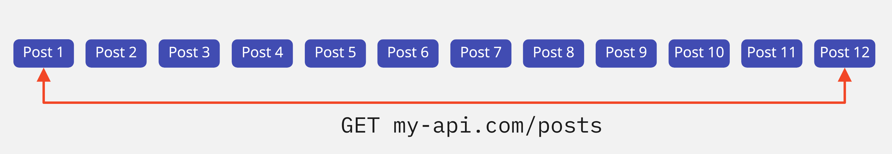
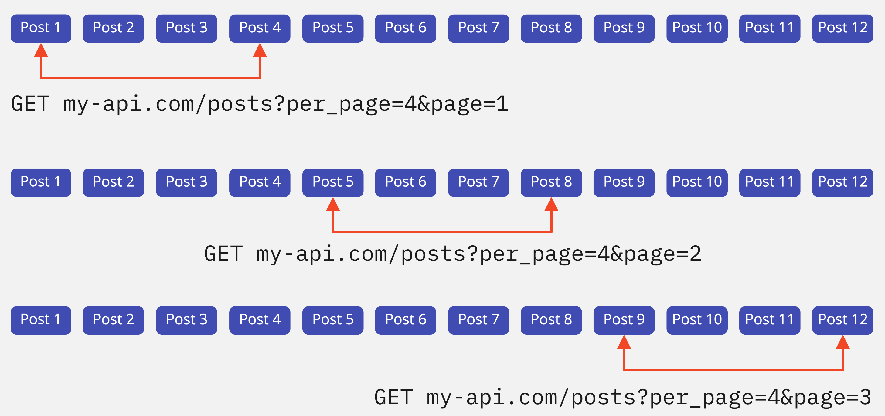

Пагинация
База данных может хранить коллекции состоящие из сотен миллионов записей. Поэтому возвращать всю коллекцию на каждый GET-запрос слишком ресурсозатратно. Размер тела ответа будет слишком большой, и время запроса затянется на десятки секунд, а то и минуты - чем больше в ответе от бэкенда данных, тем дольше он идет по сети.
Кроме этого, необходимо думать о пользователях - врядле им нужны все миллионы записей сразу. Обработка такого большого количества данных в ответе и отрисовка интерфейса потребует огромных ресурсов устройства на котором просматривается веб-страница. По статистике пользователи находят интересующую их информацию на нескольких первых экранах.
Допустим наш бекенд my-api.com хранит очень большую коллекцию постов в ресурсе /posts, которую представим двенадцатью элементами на иллюстрации.

На каждый GET-запрос бэкенду придется вернуть всю коллекцию и мы столкнемся с проблемами описанными ранее. Для их решения и существует пагинация - приём, при котором на первый и каждый последующий GET-запрос возвращается не вся коллекция, а определённая её часть. Пагинация реализуется на бэкенде и используется на фронтенде при помощи специальных параметров запроса.
Количество элементов ответа
Первый параметр определяет количество элементов в ответе от бэкенда. Пусть, в нашем случае, он называется per_page. Стандарта именования параметров пагинации нет, поэтому их имена зависят от бэкенд разработчика. В таком GET-запросе бэкенд вернет не всю коллекцию из двенадцати элементов, а только первые четыре. Если передать отрицательное значение или значение большее чем количество элементов в коллекции, то бэкенд может ответить по разному - проигнорировать их или вернуть ошибку 400 (BAD REQUEST), зависит от его реализации.
Публичный JSONPlaceholder API так же поддерживает пагинацию - количество элементов в ответе контролируерт параметр _limit. Всего в коллекции /posts есть сто элементов. Изменяйте значение параметра _limit в примере и исследуйте ответ бэкенда в интерфейсе и на вкладке Network.
В таком GET-запросе бэкенд вернет не всю коллекцию из двенадцати элементов, а только первые четыре. Если передать отрицательное значение или значение большее чем количество элементов в коллекции, то бэкенд может ответить по разному - проигнорировать их или вернуть ошибку 400 (BAD REQUEST), зависит от его реализации.
Публичный JSONPlaceholder API так же поддерживает пагинацию - количество элементов в ответе контролируерт параметр _limit. Всего в коллекции /posts есть сто элементов. Изменяйте значение параметра _limit в примере и исследуйте ответ бэкенда в интерфейсе и на вкладке Network.
Номер группы элементов
Указав желаемое количество элементов в ответе мы всегда получим одинаковый результат - первые per_page элементов коллекции, так называемую первую группу или «страницу». Второй параметр пагинации контролирует смещение внутри коллекции - номер группы элементов которую мы хотим получить. Если бэкенд реализует пагинацию, то значение этого параметра по умолчанию единица - первая группа или «страница» элементов. Пусть в нашем случае он называется page. Изменяя значение параметра page мы уточняем бэкенду какую следующую группу элементов хотим получить, и так пока в коллекции не закончатся элементы. Если задать отрицательное значение или больше чем групп в коллекции - ответ бекенда будет зависеть от его реализации.
В JSONPlaceholder API параметр контролирующий группу элементов называется _page. Изменяйте его значение в примере и исследуйте ответ бэкенда в интерфейсе и на вкладке Network.
ИНТЕРЕСНО Для того чтобы знать когда закончатся элементы в коллекции и вывести об этом сообщение пользователю, бэкенд в каждом ответе возвращает не только массив элементов, но и метаданные про доступное количество групп («страниц»), зависящее от значения параметра per_page, или просто общее количество элементов в коллекции, тогда вычисление количества групп ложится на плечи фронтенд разработчика. К сожалению JSONPlaceholder API не реализует этот функционал.
Приём «Загрузить ещё»
Для того чтобы динамически изменять номер группы на каждый последующий запрос, достаточно объявить еще одну глобальную переменную, назвем её page и установим начальное значение 1 - первая группа элементов. После каждого успешного запроса, в коллбэке метода then() будем увеличивать значение page на единицу. При составлении параметров запроса используем её значение.После загрузки первой группы элементов, текст на кнопке измениться, а сама кнопка опустится под список постов. Когда пользователь прокрутит страницу и опять кликнет по ней - выполнится запрос за второй группой элементов, которая добавиться к уже существующей разметке списка постов. Если при клике на кнопку «Fetch posts» постов для загрузки больше нет - показываем оповещение.
Мы добавили проверку конца коллекции на фронтенде, потому что JSONPlaceholder API не реализует этот функционал на бэкенде. В нашем случае достаточно разделить общее количество элементов в коллекции на количество элементов в одной группе. Это похоже на случай, когда бэкенд возвращает не количество доступных страниц, а общее количество элементов в коллекции.